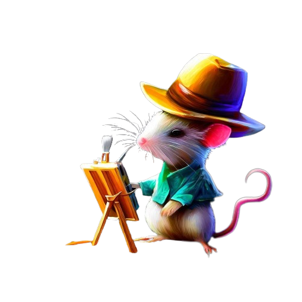

Bem-vindo ao nosso site, onde você encontrará uma variedade de expressões artísticas, desde vanguardas europeias e arte contemporânea até a sintaxe visual e expressões artísticas regionais. Explore também a música como parte desse universo inspirador. Descubra a interseção entre diferentes formas de arte em uma jornada cativante.
